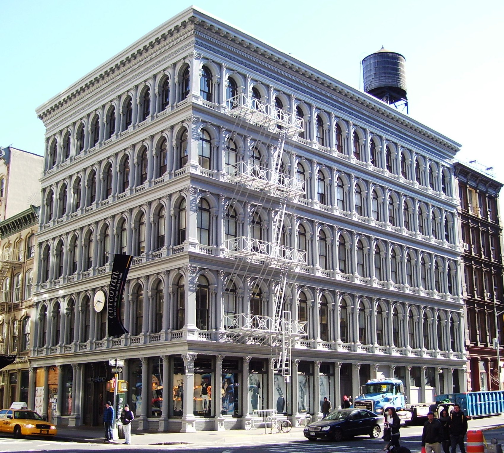

Find a car and take a delivery job. The city is yours to explore.
No matching places nearby.
No matching contacts.
No transactions yet.
Fictional share prices update every 30 seconds.
No messages.
No photos yet.
Vehicle
Display
Camera
Audio & input
Galleries
How it was built
Explore all five boroughs. The citywide source contains 1,083,529 surveyed building features. Detailed geometry loads around you as you walk, drive, or travel to another neighborhood.
3D buildings, streets and aerial imagery by NYC OTI. Street tree data by NYC Parks. Bike lanes and paths use NYC DOT Bike Routes. Address lookup by NYC Planning GeoSearch. Additional map data © OpenStreetMap contributors. GTA wordmark set in Pricedown Black by Ray Larabie. Interface typefaces include Jost, Barlow Condensed, Passion One, Rye and Yellowtail by Brian J. Bonislawsky.

Statue Of Liberty Low Poly by e-sfera, licensed under CC BY 4.0. Adapted to the city survey and optimized for two viewing distances.
Cars, pedestrians and delivery jobs are game elements. Source metadata and the complete spatial index are included in the project. Geometry and imagery stream directly from NYC’s public services. NYC Open Data terms.